안녕하세요,
변다솜의 작업실입니다.
화면을 설계하고 직접 구현합니다.
파일을 더블클릭해서 프로젝트를 열어보세요.
Tip · 한 번 클릭해 선택하고, 두 번 클릭해 열어보세요.
화면을 설계하고 직접 구현합니다.
파일을 더블클릭해서 프로젝트를 열어보세요.
분산된 객실 탐색과 예약 정보를 다시 구조화한 팀 프로젝트입니다.
맞춤 공고, 일정, 서류 준비와 가족 서명까지 하나의 흐름으로 설계했습니다.
탐색·저장·라이브 스포츠까지 하나의 경험으로 재구성한 Apple TV 리디자인.
제품 분해·조립 스크롤과 가상 재배 경험을 결합한 인터랙티브 마이크로사이트입니다.
현재 위치 기반 정보와 스티키 구조를 적용한 기상청 개인 리디자인입니다.
문제를 구조화하고, Figma에서 설계하고, 코드로 움직임까지 구현합니다.
메인 케이스 스터디와 분리한 비주얼·웹 작업 아카이브입니다.
생각한 화면을,
움직이는 경험으로.
클릭하면 점프해요 ↗
각기 다른 문제와 해결 과정을 담았습니다. 작품을 선택해 자세히 살펴보세요.
SCREEN 01 · 해비치 제주
Haevichi Hotel & Resort JEJU
팀 프로젝트 07월~08월 말까지
분산된 객실 탐색·예약 정보를 재구조화한 팀 프로젝트입니다. Facility 파트를 담당하고 스타일가이드와 프로토타입 전반을 함께 완성했습니다.
프로젝트 보기SCREEN 02 · LH청약플러스
LH 청약플러스
개인 프로젝트 07월~08월 말까지
행정 용어와 복잡한 탐색 때문에 어려웠던 청약 과정을 '맞춤 공고 → 일정 → 서류 준비'의 흐름으로 재설계했습니다.
프로젝트 보기SCREEN 03 · 교원 웰스 미니팜
교원 웰스 미니팜 - 마이크로 사이트
2인 팀 프로젝트 · 진행 중 (9월 말~10월 말)
제품을 분해하고 결합하는 스크롤 인터랙션과 가상 식물 재배 체험을 통해 사용자가 제품의 구조와 작동 원리를 자연스럽게 이해할 수 있도록 모바일 마이크로사이트를 기획했습니다.
상세 페이지 준비 중SCREEN 04 · Apple TV
Apple TV UX 개선
2조 OTT 팀 프로젝트 · UX 분석 및 개선안
로그인·탐색·저장·시청 과정에서 발견한 불편을 9개 영역으로 정리하고, 콘텐츠 선택과 시청 상태가 더 명확하게 보이도록 개선 방향을 제안했습니다.
프로젝트 보기 ↗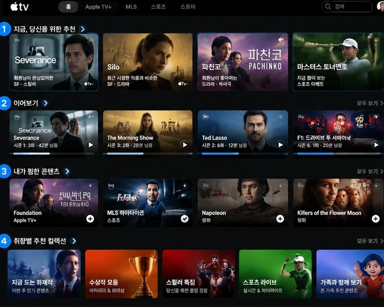
APPLE TV / UX CASE STUDYBEHIND THE SCENES / 변다솜
사용 흐름을 정리하고, 화면을 설계하고, 직접 구현합니다.
팀 프로젝트와 개인 리디자인 작업을 통해 경험을 쌓고 있습니다.
2026.06 — 2026.11
2026년 11월 수료 예정
UI/UX 디자인 · 웹 퍼블리싱 · React 학습
해비치 제주 · 팀 리디자인
LH 청약플러스 · 개인 리디자인
Apple TV · 팀 리디자인 진행 중
Figma 프로토타입 · 반응형 퍼블리싱
JavaScript / React · Git 버전 관리
SCREEN 04 / OTT EXPERIENCE
다음 행동을 추측하지 않아도 되는 화면.
로그인부터 이어보기까지, 사용자의 흐름과 맥락을 정리합니다.
제공된 UX 요약 자료의 개선 시안입니다. 관찰 내용과 제안 단계의 개선 방향을 정리했으며, 효과는 후속 사용자 검증이 필요합니다.
01 / DESIGN DIRECTION
자료에서 반복되는 문제는 버튼과 상태의 가시성, 흐름의 일관성, 선택을 돕는 설명의 부족입니다. 이 세 가지를 화면을 정리하는 기준으로 삼았습니다.
저장 결과, 시청 진행률, 인증 상태를 즉시 확인하게 합니다.
뒤로가기, 재인증, 공유 계정에서도 사용자의 위치를 보존합니다.
추천 이유, 공개 일정, 평점과 구독 혜택을 이해하기 쉽게 전달합니다.
02 / UX OBSERVATIONS
첨부 자료를 영역별로 요약했습니다. 각 항목에서 원본 관찰·개선 시안을 함께 확인할 수 있습니다.
핵심 버튼이 배경에 묻히고 인증 상태와 다음 행동이 불분명하다.
주요 CTA의 대비를 높이고 로그인 흐름을 단순화한다. 인증번호 발송 상태와 입력 안내를 텍스트로 전달한다.
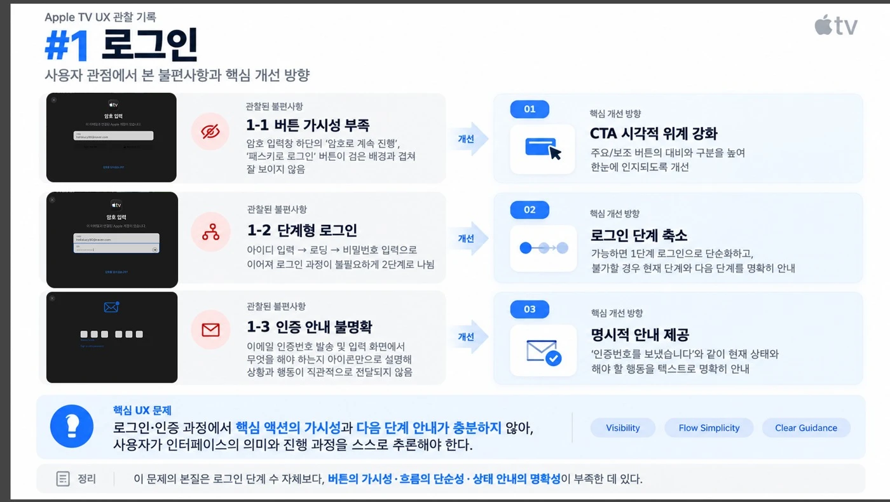
한글·영문 혼용, 재인증 이유와 뒤로가기 결과가 불명확하며 구독 혜택 설명이 부족하다.
언어를 일관되게 적용하고 재인증 목적을 설명한다. 이전 설정 위치로 돌아가도록 맥락을 보존하며 가격 옆에 포함 혜택과 관리 기능을 안내한다.
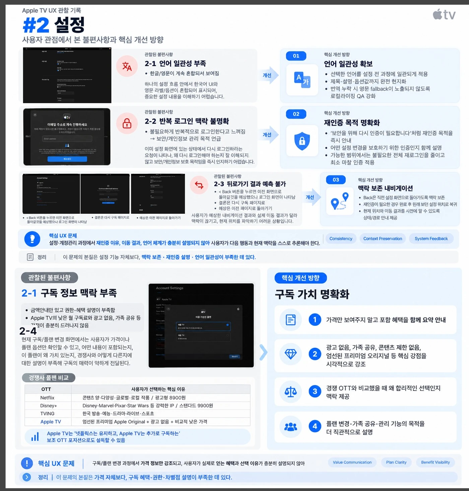
시청 중인 콘텐츠와 저장한 콘텐츠가 섞이고, 공유 계정 및 스포츠의 저장 위치와 상태를 구별하기 어렵다.
이어보기와 나의 리스트를 분리하고 진행률·저장 상태를 표시한다. 프로필별 목록과 스포츠 전용 목록을 제공하며 저장 결과와 이동 버튼을 안내한다.
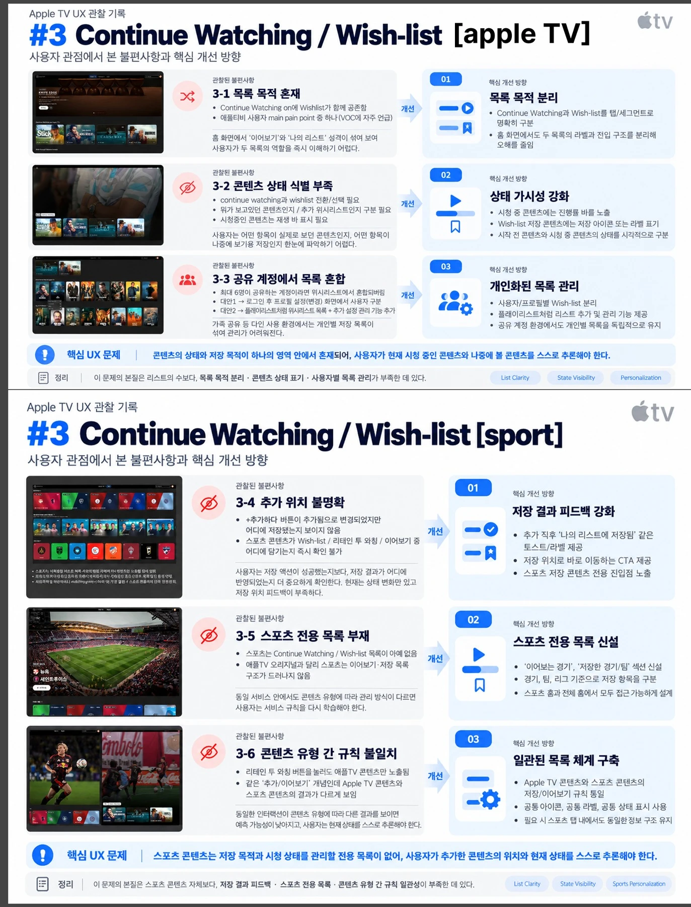
오리지널의 정체성과 품질 근거가 약하고 선택을 돕는 기준이 부족하다.
오리지널 라벨과 큐레이션 메시지를 강화한다. 수상·평가 정보를 탐색 단계에 제공하고 상황별 빠른 선택 진입점을 마련한다.
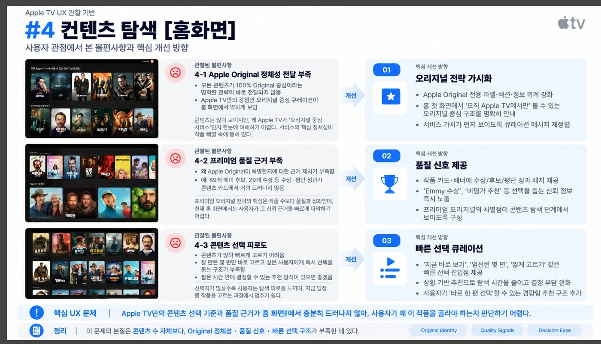
동일한 추천 목록이 반복되고 사용자의 취향과 추천 이유가 드러나지 않는다.
시청 이력·저장·선호 장르·시청 상황을 반영한다. “지금, 당신을 위한 추천”과 취향별 컬렉션을 구성하고 추천 이유를 함께 보여준다.
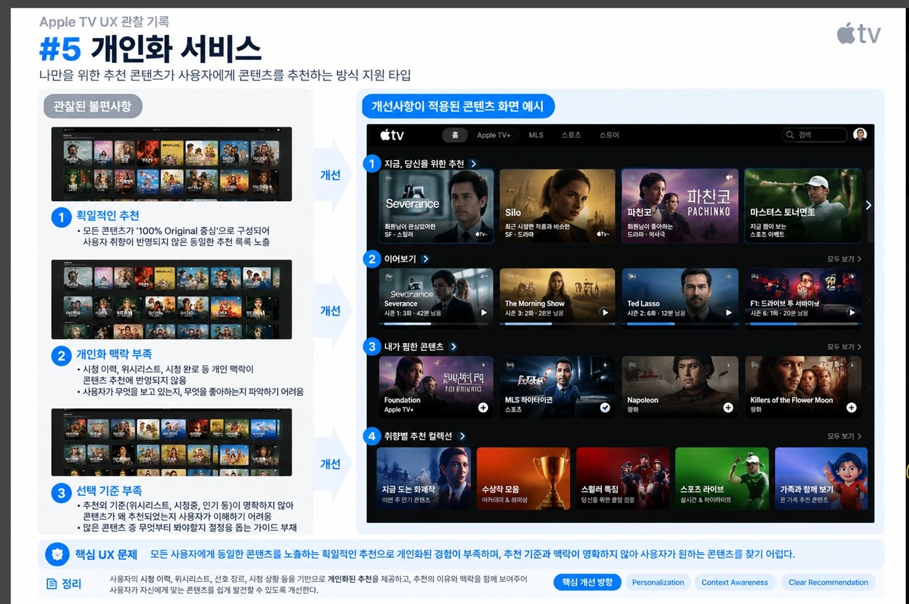
작은 날짜 표기로 공개 요일과 업데이트 주기를 알아보기 어렵다.
섹션 상단에 정기 공개 주기를 안내하고 카드에 요일 배지를 추가한다. 알림 받기와 캘린더 저장으로 다음 행동을 연결한다.
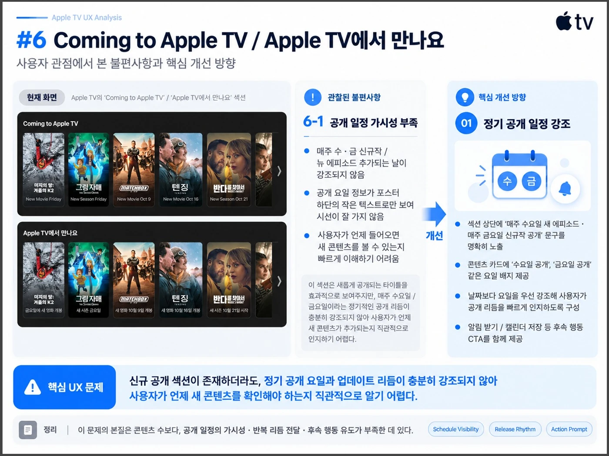
작은 드롭다운에 결과가 제한되고 인물 정보와 국가별 시청 가능 여부가 일관되지 않다.
메인 영역에 검색 결과를 즉시 반영한다. 작품·인물·연관 결과를 구분하고 시청 불가 이유와 유사 콘텐츠 등의 대안을 안내한다.
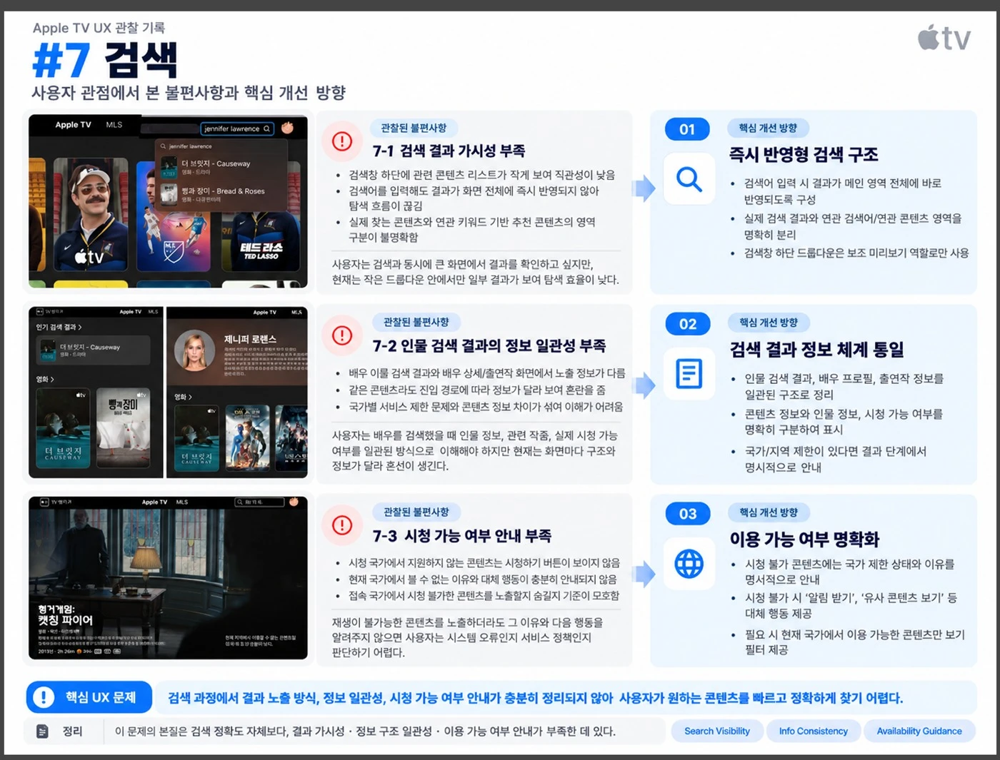
한국어 화면에서 작품을 평가할 정보와 리뷰가 충분히 드러나지 않는다.
평점 출처·리뷰 수·평가 요약을 명확히 표시하고 국내외 평가 정보를 구분한다. 실제 제공 가능 여부와 데이터 사용 조건은 후속 검토한다.
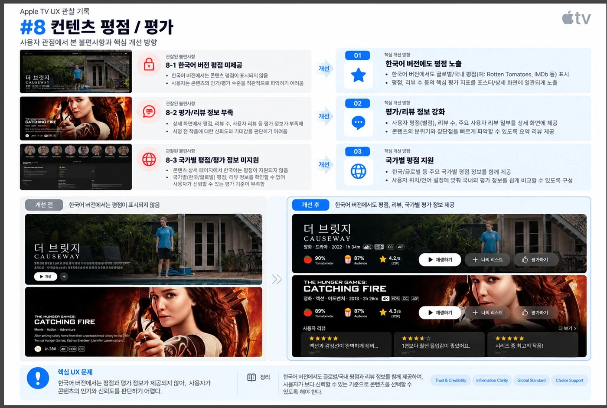
저장 버튼의 의미, 히어로 노출 기준, 에피소드 진행 상태와 시청 방법의 역할이 불분명하다.
“나의 리스트에 추가”처럼 액션을 명명하고 결과를 알려준다. 회차별 미시청·시청 중·완료 상태와 다음 회차를 표시하며 시청 방법을 이용 가이드로 정리한다.
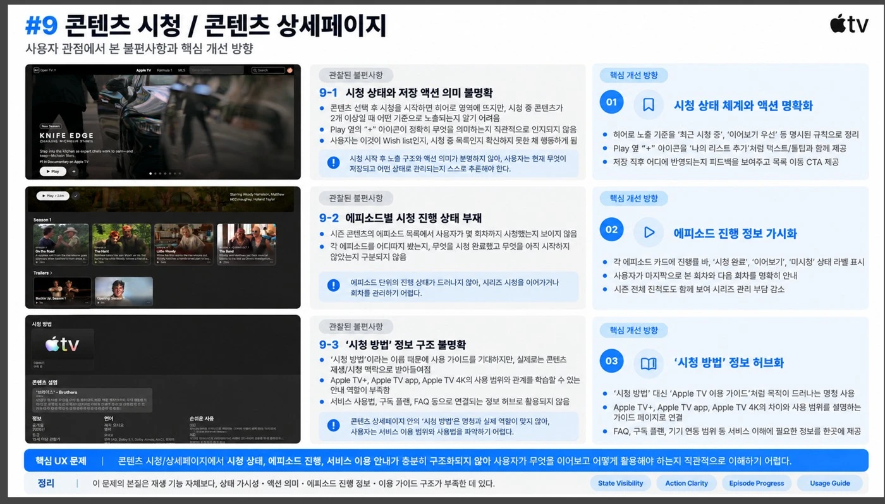
추가 메모에서는 본사 기준 용어의 일괄 적용이 한국어 화면에서 어색한 표현으로 이어질 수 있다는 가설을 제시합니다. 용어의 일관성을 유지하면서 기능과 다음 행동을 설명하는 문구를 제안합니다.
| 기존 개념 | 제안 문구 | 전달할 의미 |
|---|---|---|
| Continue Watching | 이어보기 | 시청 중인 작품 |
| Wish-list / + | 나의 리스트에 추가 | 나중에 볼 작품 저장 |
| Coming to Apple TV | 공개 예정 | 공개 날짜·요일 안내 |
| 시청 방법 | Apple TV 이용 가이드 | 기기·구독·사용법 안내 |
03 / STYLE GUIDE
첨부한 컬러·타입·그리드 가이드를 정리했습니다. 아래 값은 이 리디자인 프로젝트의 기준이며 Apple 공식 디자인가이드를 의미하지 않습니다.
#5865F2#E91E1B#171717#242424#A3A3A3#FFFFFF브랜드 컬러는 주요 액션과 선택 상태에, 스포츠 컬러는 스포츠 영역의 강조에 사용합니다. 배경과 카드의 명도 차이로 레이어를 나누고, 보조 텍스트와 본문 텍스트를 구분합니다. 실제 조합의 대비는 구현 단계에서 확인합니다.
Inter / System Sans · 400 / 500 / 700. 원본에 서체 변경 메모가 있어 폰트는 임시 기준으로 표시했습니다. 모바일 스케일이며 데스크톱 확장 시 크기와 행간을 조정합니다.
| 역할 | 크기 / 행간 | 굵기 |
|---|---|---|
| Display XL | 34 / 41 px | 500 |
| Display Compact | 28 / 34 px | 500 |
| H1 | 22 / 28 px | 500 |
| H2 | 20 / 25 px | 500 |
| H3 | 17 / 22 px | 700 |
| H4 | 16 / 21 px | 500 |
| Body Large | 17 / 22 px | 400 |
| Body Default | 15 / 20 px | 400 |
| Body Small | 13 / 18 px | 400 |
| Label | 12 / 16 px | 400 |
| Caption | 11 / 13 px | 400 |
| 항목 | 값 | 상태 |
|---|---|---|
| Columns | 12 | 첨부 자료에서 확인 |
| Gutter | 24 px | 권장 · 검증 필요 |
| Margin | 80 px | 권장 · 검증 필요 |
| Spacing base | 8 px | 권장 · 검증 필요 |
컬럼 수 외의 값은 확정 사양이 아닙니다. 실제 화면 너비와 반응형 구간에 맞춰 검증하며 모바일에서는 컬럼 수와 여백을 별도로 설계합니다.
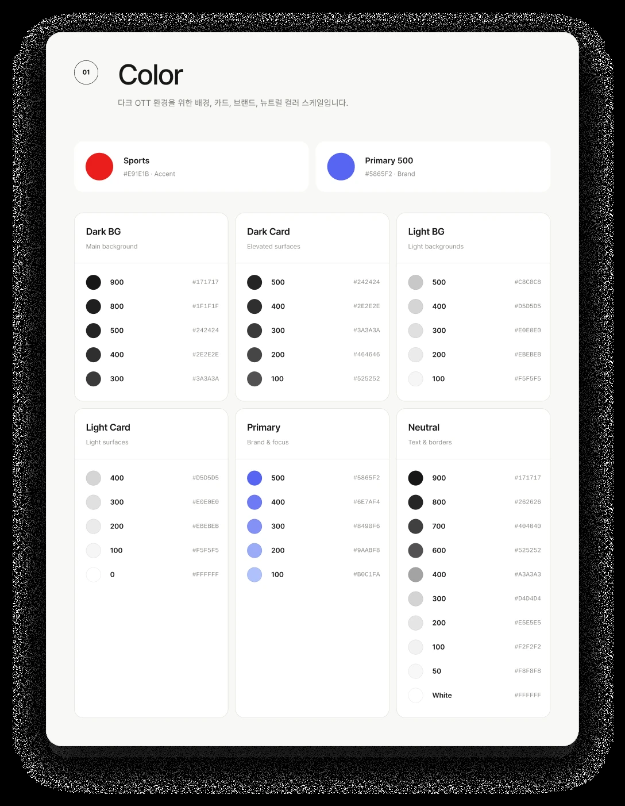
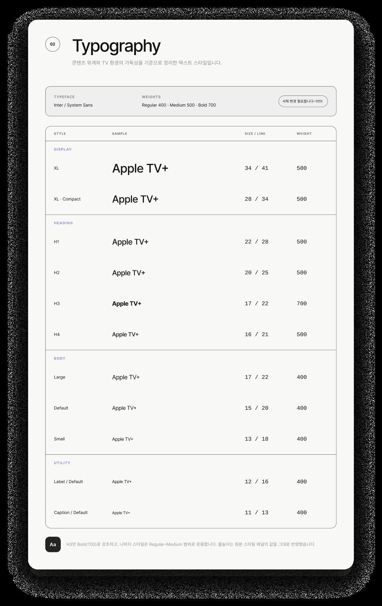
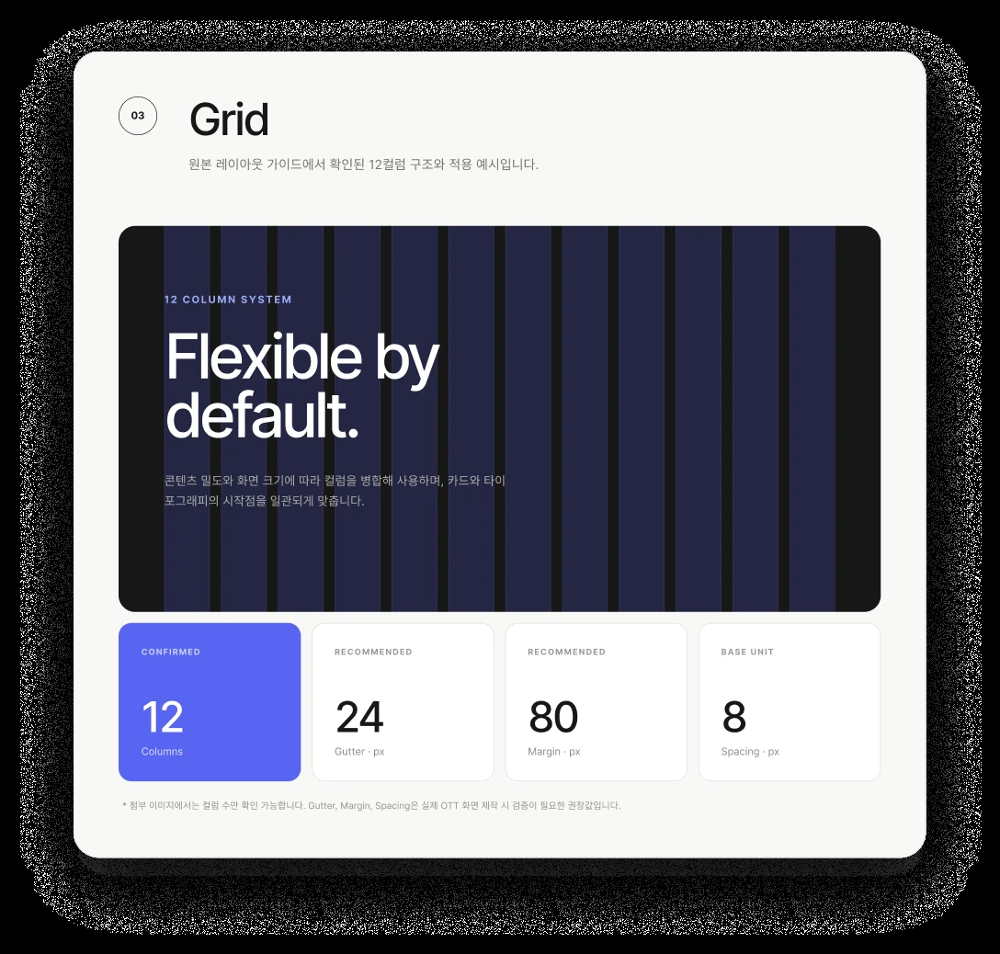
04 / NEXT STEP
로그인 완료, 저장한 콘텐츠 찾기, 검색 후 시청 가능 여부 확인, 다음 에피소드 이어보기 과제를 중심으로 개선 전후의 이해도와 과업 수행을 비교할 수 있습니다. 개인화 추천의 기준과 평점·일정 데이터 제공 가능성도 후속 검토 항목입니다.
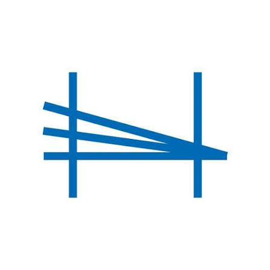
팀원이 실제로 묵었던 해비치 호텔의 웹사이트에서 사용자 입장이 고려되지 못한 지점을 발견하고, 사용자 플로우를 다시 설계해 실제 호텔이 주는 편안함을 화면에 그대로 옮긴 프로젝트입니다.
해비치 호텔 제주 웹사이트는 다양한 정보를 제공하지만, 객실 탐색과 예약 과정에서 정보가 분산되어 있어 사용자가 원하는 정보를 빠르게 찾기 어려웠습니다.
객실별 세부 정보와 실내 모습을 확인하며 비교하기 어려웠습니다. 패키지 상세보기를 누르면 다른 페이지로 이동해 탐색 흐름도 끊겼습니다.
해결예약창에서 머물고 싶은 객실을 여러 개 담아 가격과 옵션을 한눈에 비교할 수 있도록 재설계했습니다.
여러 예약 버튼으로 행동이 분산되고, 부킹바가 히어로를 가려 이미지와 문구를 읽기 어려웠습니다. 성인 2명·어린이 2명을 초과해 추가하려 하면 버튼이 비활성화되지만 이유가 안내되지 않았습니다.
해결바다 전망 위주였던 히어로를 객실·부대시설이 담긴 4개 슬라이드로 구성하고, 프로그레스바로 전환 시점을 표시했습니다.
예약하기 CTA는 스티키 헤더의 버튼 하나로 통합했습니다. 부킹바는 히어로 이미지를 가리지 않는 하단 중앙에 배치하고, 버튼을 ‘검색하기’로 구분해 조건 검색과 예약의 역할을 나눴습니다.
일정·객실 선택 흐름에서는 성인과 어린이 인원을 별도 팝업에서 확인하고 선택하도록 정리했습니다.
룸 섹션의 타이틀을 눌러도 사진만 바뀌고 객실 상세 정보로 이동할 수 없었습니다. 텍스트 위주의 구성과 숨겨진 정보 때문에 어떤 시설과 혜택이 있는지 파악하기 번거로웠습니다.
해결객실·오퍼·부대시설·멤버십을 메인에 배치해 호텔의 시설과 혜택을 미리 살펴볼 수 있게 했습니다. 이미지와 상세 링크를 함께 제공해 정보를 파악한 뒤 원하는 페이지로 이어지도록 구성했습니다.
프로모션의 할인과 제공 혜택이 충분히 드러나지 않아, 이용할 수 있는 오퍼를 빠르게 알아보기 어려웠습니다.
해결메인 오퍼 섹션에서 할인율·무료 조식 등 주요 혜택을 먼저 보여주도록 구성했습니다. 관심 있는 혜택을 발견하고 상세 내용을 확인하기 쉽게 배치했습니다.
헤더 카테고리부터 하위 메뉴까지, 흩어진 정보를 다시 묶어 정보 우선순위를 재정립했습니다.
IA · 헤더 7개 카테고리를 기준으로 하위 메뉴 구조를 재정립했습니다.
와이어프레임 노트
와이어프레임 · 실제 메인페이지에서 이미지를 걷어내고 정보 블록의 우선순위와 흐름만 남긴 버전입니다.
해비치 브랜드의 차분한 블루 톤을 기반으로 컬러·타이포 체계를 정리해, 전 페이지에서 일관된 무드를 유지했습니다.
스타일가이드를 보여주는 데서 끝내지 않고, 기존 사이트에서 사용자가 실제로 멈췄던 지점을 화면 구조와 인터랙션으로 해결했습니다.
예약창에 관심 객실을 여러 개 담아 가격과 옵션을 함께 비교합니다.
4개 슬라이드와 진행 표시, 스티키 헤더의 예약하기, 하단 부킹바의 검색하기로 역할을 구분했습니다.
객실·오퍼·부대시설·멤버십을 이미지와 상세 링크로 미리 안내합니다.
할인율·무료 조식 등 오퍼의 주요 혜택을 메인에서 먼저 보여줍니다.
해비치 프로젝트 전반에 높은 참여 기여도로 참여했습니다. 정보구조 재정리부터 화면 설계, 디자인, 퍼블리싱까지 직접 진행하며 실제 화면에서 더 직관적이고 완성도 높은 경험이 되도록 개선했습니다.
기존 상세페이지는 "이런 시설이 있다"는 텍스트 나열로 끝났습니다. 히어로 이미지와 갤러리 사진을 배치해 공간의 분위기를 직접 보여주는 방식으로 바꿨습니다. 아래는 실제 배포된 상세페이지입니다.
동일한 코드가 모바일 화면에서 어떻게 대응하는지, 전체보기와 상세페이지를 나란히 놓고 확인할 수 있도록 했습니다.
예약하기에서 객실을 고르는 중, 관심 있는 객실의 ‘객실비교’를 누르면 비교 목록에 담깁니다. 최대 3개까지 담은 뒤 ‘객실비교하기’로 가격과 옵션을 비교하도록 설계했습니다. PC와 모바일 모두 객실 목록을 보면서 비교할 객실을 선택할 수 있습니다.
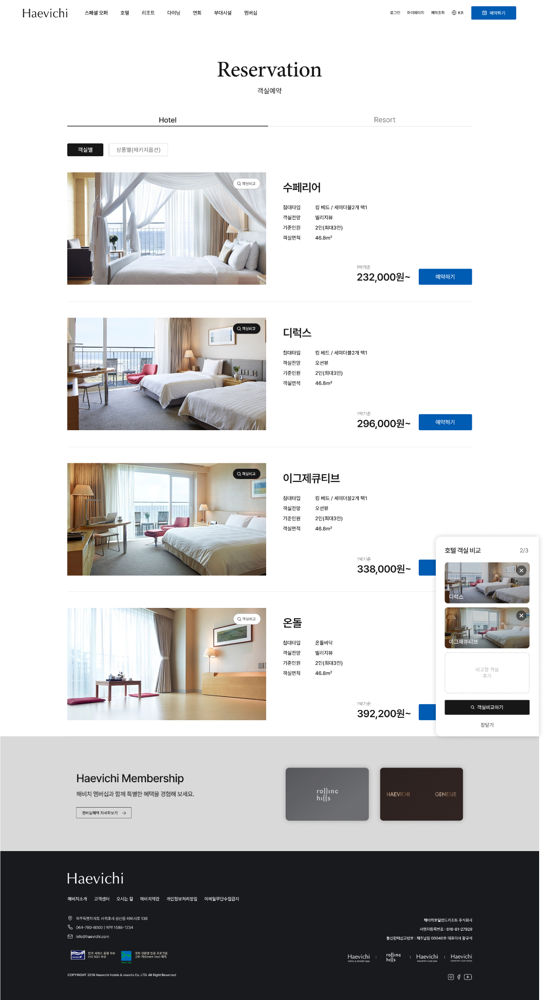
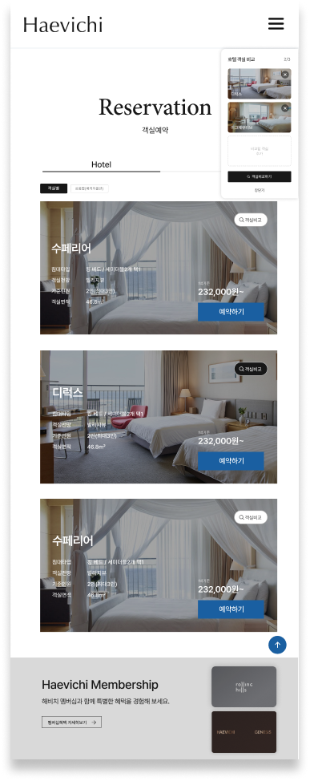
예약을 확인하는 방법이 서로 다릅니다 — 회원은 아이디·비밀번호, 회원권은 멤버십 인증, 비회원은 예약번호 조회. 하나의 폼으로 억지로 합치는 대신 탭으로 분리해 각자 필요한 입력만 보이도록 했습니다.
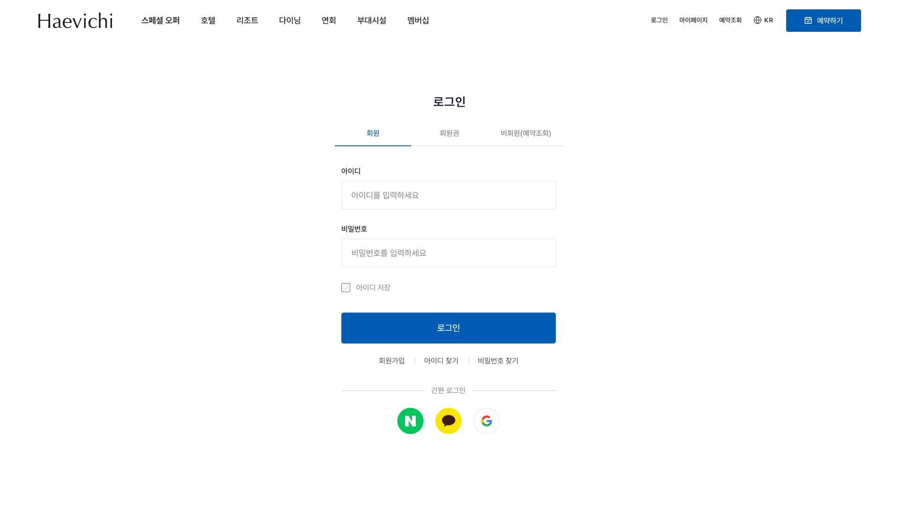
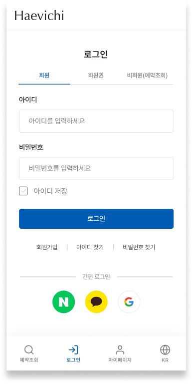
발표에서 받은 세부 피드백도 화면에 반영했습니다. 커서, 문구, 텍스트 가독성, 정보 미리보기를 정리해 탐색 흐름을 더 명확하게 다듬었습니다.
해비치 리디자인의 기획, 정보구조 정리, 화면 설계, UI 디자인, 프로토타입, 퍼블리싱까지 전 과정에 참여했습니다. 특정 한 섹션에만 한정되지 않고 메인과 서브페이지 전반의 구조와 완성도를 함께 조율했습니다.
객실·오퍼·부대시설·멤버십·예약 흐름을 함께 검토하고, 사용자가 정보를 탐색한 뒤 예약까지 자연스럽게 이어지도록 화면 우선순위와 CTA 역할을 정리했습니다. 히어로, 부킹바, 객실 비교, 시설 정보 미리보기 등 주요 사용 흐름의 개선에도 참여했습니다.
Facility는 Pool / Fitness / Amenities / Kids / Gallery 구조부터 카드 레이아웃, 상세페이지, 모바일 대응, hover 인터랙션까지 직접 설계하고 구현했습니다. Concierge 상세페이지 역시 층별 안내, 서비스 카드, 문의처 정보 구조와 화면 구성을 직접 완성했습니다.
헤더·푸터·메인 슬라이더·Room 탭·Offers·Resort·Membership 등 여러 화면의 퍼블리싱에 참여했으며, 반응형 레이아웃과 슬라이더·hover 인터랙션을 구현했습니다. 팀 공용 style.css의 컬러·타이포 변수와 미디어쿼리 구조도 함께 정리했습니다.
컴포넌트 라이브러리 정리, 스타일가이드 문서화, Figma 프로토타입 제작, 팀 화면 간 톤앤매너 통일에 참여했습니다. 발표와 사용자 피드백 이후 수정 사항도 화면에 반영하며 최종 완성도를 높였습니다.
처음 LH청약플러스를 이용하는 청년이 자신의 조건에 맞는 공고를 찾고, 신청 준비부터 결과 확인까지 관리하도록 돕는 리디자인입니다. 공고·자격·서류·일정을 개인 조건을 기준으로 연결하는 경험을 제안합니다.
KEY가족 서명, 직접 그려 보기공공임대주택은 다양한 계층의 주거안정을 지원하는 제도이며, LH청약플러스는 관련 공고 확인·신청·결과 조회와 민원 처리를 제공하는 서비스입니다. 이 프로젝트는 그중 처음 공공임대주택을 알아보는 청년의 경험에 집중합니다.
지원이 필요한 사람을 위한 제도지만, 공고를 찾으려면 임대 유형과 행정 용어를 먼저 이해해야 했습니다.리디자인의 출발점 · 직접 이용하며 발견한 간극
개인 이용 경험과 화면 관찰을 바탕으로 정리한 문제입니다. 사용자의 조건과 공고 정보가 연결되지 않아, 자신에게 해당하는 내용과 다음 행동을 스스로 판단해야 했습니다.
임대 유형과 행정 용어를 이해하고 내 조건을 공고마다 대조해야 합니다. 여러 공고를 비교할 때 같은 확인을 반복하게 됩니다.
큰 카드 4개와 작은 카테고리 5개가 일부 기능에서 겹쳐 보이고, 색상 차이만으로 중요도를 파악하기 어렵습니다. 초심자에게 필요한 안내는 유지하되, 각 메뉴를 언제 이용하는지와 핵심 행동을 분명하게 보여줄 필요가 있습니다.
캘린더의 ‘총 53건’ 같은 숫자만으로는 어떤 공고의 현황인지, 나와 관련 있는지, 몇 세대 모집인지 판단하기 어렵습니다. 신청자 수와 경쟁률을 구분해 보여줘야 합니다.
큰 메뉴와 필터가 지도를 가리고, 위치와 주택 정보를 함께 비교하기 어렵습니다. 모바일에서는 지도·검색 조건·결과 목록을 연결하는 구성이 필요합니다.
공고를 찾는 것 자체보다, 나에게 맞는 공고를 선택하고 신청할 준비를 마치는 것이 사용자의 목표입니다. 개인 경험을 바탕으로 다음 이용 시나리오를 설정했습니다.
원하는 지역과 임대 유형, 본인의 상황을 입력합니다. 낯선 유형은 쉬운 설명을 보고 선택합니다.
내 조건에 관련된 공고와 관심 공고를 모아 확인합니다.
공고별 자격 요건과 과거 모집 경쟁률을 살펴보고, 유형별 예상 순위·가점 확인으로 이어집니다.
필요 서류를 체크하고 발급 예정일과 준비 메모를 캘린더·다이어리에 기록합니다.
★ 가족 서명 파트 보기접수 시작·마감, 서류 제출, 결과 발표 일정을 확인하고 신청 상태를 관리합니다.
정보를 더 추가하기보다, 사용자의 조건을 기준으로 공고·자격·서류·일정을 연결해 실제 신청 행동으로 이어지도록 돕습니다.
전체 정보보다 내 조건에 관련된 공고와 해야 할 일을 먼저 보여줍니다.
불필요한 정보 노출을 줄이고, 행정 용어와 숫자에 판단할 수 있는 맥락을 더합니다.
정보를 읽은 다음 자격 확인, 서류 준비, 일정 기록으로 자연스럽게 이어지게 합니다.
조건 설정 → 맞춤 공고 → 자격·과거 경쟁률 확인 → 서류 준비·일정 기록 → 신청 현황 관리로 이어지는 흐름을 제안합니다.
내 조건과 관련된 공고, 오늘 해야 할 일, 관심 공고의 다음 일정을 요약합니다.
화면을 클릭하면 직접 눌러 볼 수 있어요. 이미지가 아니라 실제로 동작하는 코드입니다.
청약 서류 중에는 신청자가 아닌 가족의 서명이 필요한 항목이 있습니다. 가족과 같은 자리에 있지 않으면 서류를 출력해 전달하고 다시 돌려받아야 하죠. 이 리디자인은 서류 준비 단계에서 카카오톡·문자 임시 링크로 서명을 요청하고, 가족이 자기 휴대폰에서 바로 서명하도록 제안합니다.
휴대폰 화면 안의 버튼을 직접 눌러 보세요.
[LH청약플러스] 도윤 님이 서류 서명을 요청했어요. 아래 링크에서 내용을 확인하고 서명해 주세요.
임시 링크 · 앱 설치 없이 열려요아직 도착한 메시지가 없어요
신청자가 서명을 요청하면 여기에 나타나요[LH청약플러스] 도윤 님이 서류 서명을 요청했어요. 아래 링크에서 내용을 확인하고 서명해 주세요.
앱 설치나 로그인 없이 이 화면에서 바로 서명할 수 있어요.
서명을 그리면 버튼이 켜져요.
도윤 님의 서류 준비 화면에 바로 반영돼요.
신청자는 서류 준비 화면에서 요청만 보내고, 이후에는 상태만 확인합니다.
서류 요약을 확인해야 서명 단계로 넘어갑니다. 무엇에 동의하는지 모른 채 서명하지 않도록 합니다.
서명이 서류의 서명란에 미리 보이고, 마음에 들지 않으면 되돌리거나 다시 쓸 수 있습니다.
요청함 → 링크 열림 → 서명 완료. 신청자가 가족에게 따로 확인하지 않아도 되도록 합니다.
※ 손가락으로 그린 서명의 법적 효력과 본인 확인 방식은 실제 서비스 도입 전에 검토가 필요한 부분으로, 회고에서 따로 정리합니다. 이 화면은 흐름을 검증하기 위한 프로토타입이며 실제 서류·연락처와 연동되지 않습니다.
아래는 리디자인 기능 제안입니다. 실제 공고 데이터와 연동된 서비스 결과가 아니라, 사용자에게 어떤 정보를 어떤 맥락으로 제공할지 정리한 설계안입니다.
원하는 지역과 유형을 설정하면 최근 공고와 과거 경쟁률을 확인하고, 자격·서류 준비를 시작하도록 돕습니다.
최근 공고 회차 · 지난 모집 경쟁률 · 내 자격 가능성 · 유형별 예상 순위·가점 · 필요 서류 목록 · 공고 등록 알림을 한곳에 배치합니다.
공식 공급계획이나 과거 주기를 참고할 수 있을 때만 예상 시점을 표시합니다. 근거와 기준일, ‘공식 공고 전 미확정’을 함께 노출합니다.
모든 임대 유형에 공통 점수를 제시하지 않습니다. 선택한 공고·유형에 따라 자격 요건과 예상 순위·가점을 구분하고 최종 공고 확인으로 연결합니다.
날짜별·공고별 신청자 수, 모집 세대수, 현재 경쟁률과 집계 기준 시각을 함께 제공합니다. 지역·유형 필터로 관련 공고를 좁힙니다.
내 조건에 관련된 예정 공고와 관심 공고의 접수 시작일·마감일, 서류 준비·제출일, 결과 발표일을 모아 보여줍니다.
가족관계증명서 준비 예정일을 기록합니다.
주민등록초본 발급 예정일을 기록합니다. 발급 항목·종류·기준일은 해당 공고의 제출 요건에 맞춰 확인합니다.
소득·자산 기준과 자격 요건을 다시 확인하고 필요 서류 목록을 갱신합니다.
신청 시작·마감, 서류 제출, 결과 발표일을 등록합니다. 완료 체크와 준비 메모를 남깁니다.
상단 검색창 아래에 지역·임대 유형·공고 상태·면적 필터 칩을 배치합니다.
지도 위에 높이를 조절할 수 있는 결과 목록 바텀 시트를 두고, 지도 보기와 목록 보기를 전환하도록 제안합니다.
선택한 주택의 지도 핀과 결과 카드를 함께 강조해 위치와 상세 정보를 연결합니다.
블루는 주요 행동에, 그린은 보조 강조에 사용합니다. 파스텔 면적에만 의존하지 않고 텍스트 대비와 제목·본문의 위계로 중요도를 구분합니다.
색상만으로 상태를 전달하지 않고, 설명과 라벨을 함께 제공하는 방향으로 설계합니다.
Primary · 신청·저장 등 핵심 행동
Outline · 보조 행동 · 클릭해서 상태를 확인해보세요
공고 상태 · 색상과 라벨을 함께 제공해 색맹·저시력 사용자도 구분 가능하도록 설계
지역 · 임대 유형 · 면적 필터 · 선택된 칩만 Primary 컬러로 강조
홈부터 서류 준비·가족 서명 요청·신청 현황까지, 현재 배포된 9개 화면입니다. 화면은 배포된 사이트를 그대로 불러온 것이고, 카드를 누르면 라이브 페이지가 열립니다. 서류 준비와 가족 서명은 위 프로토타입에서 직접 써볼 수 있습니다.
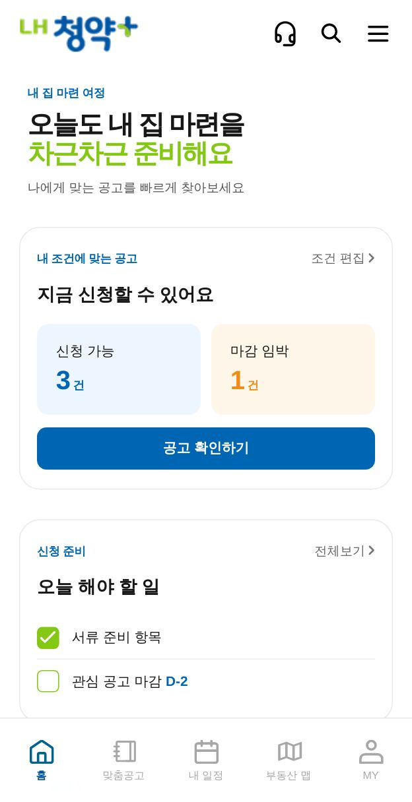
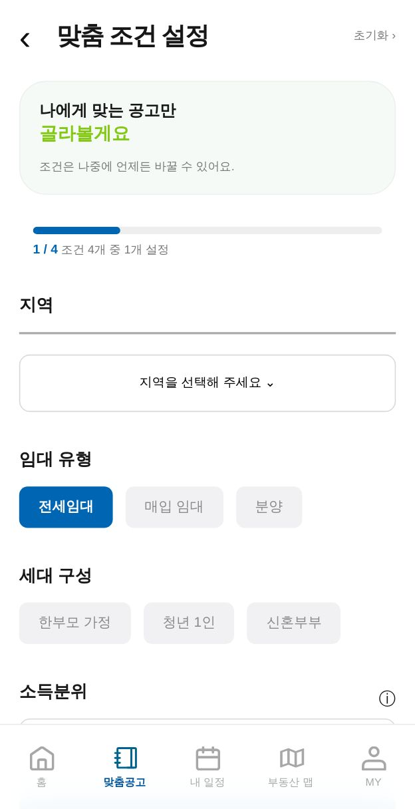
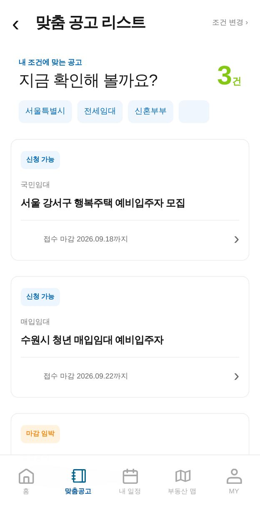
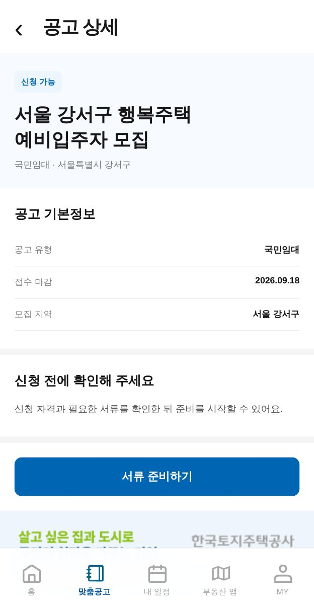
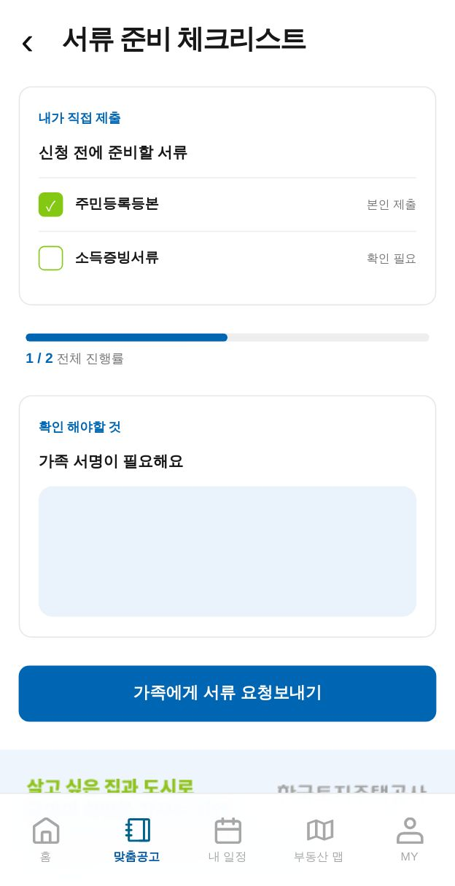
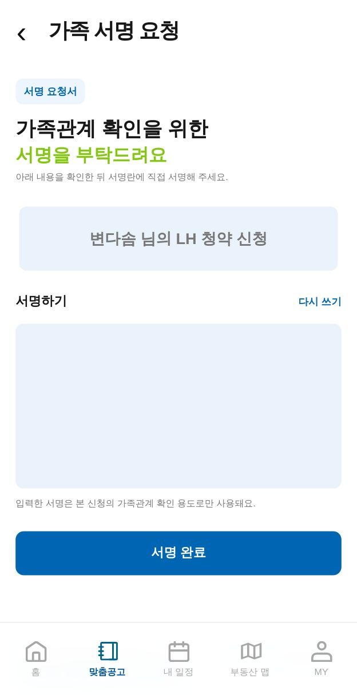
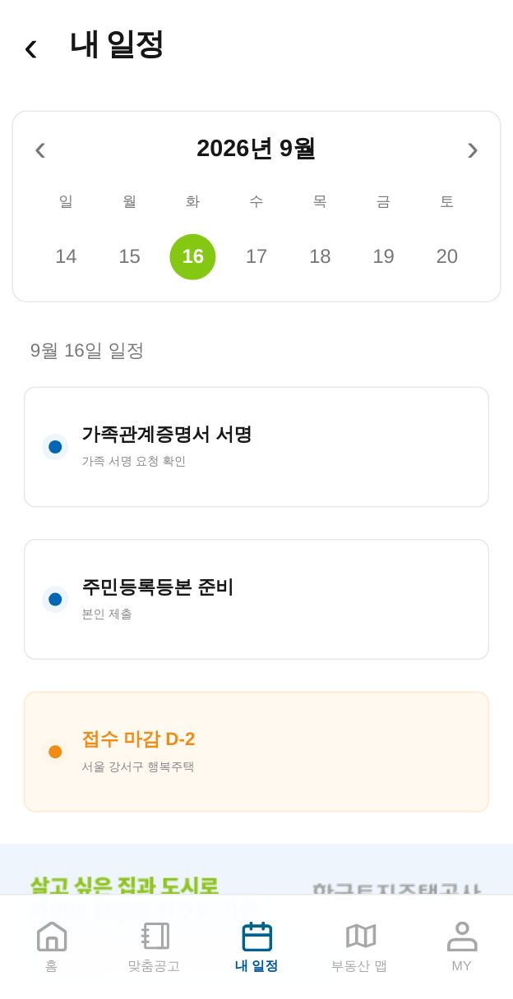
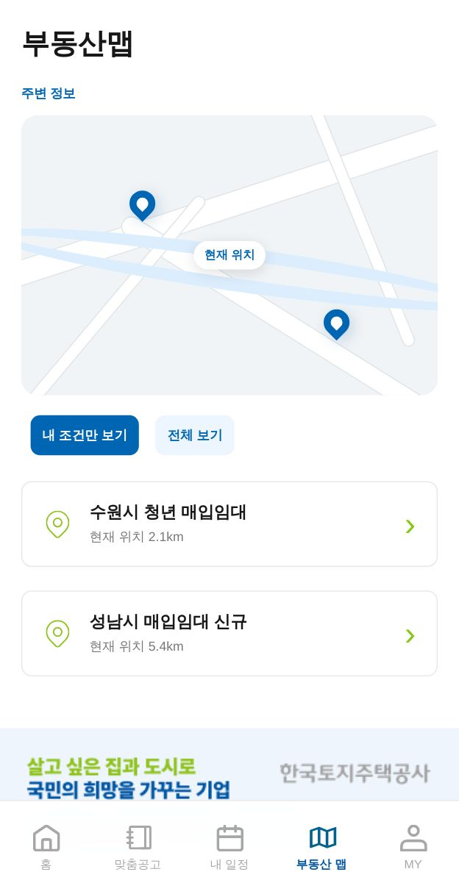
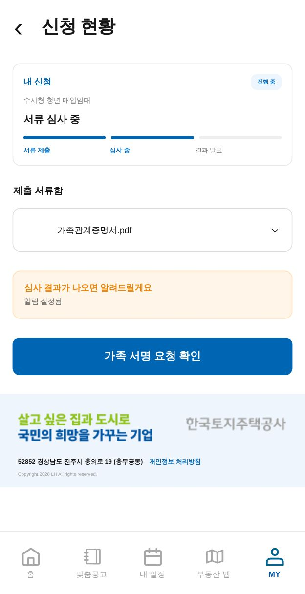
개인 이용 경험에서 문제를 발견하고 조건·공고·일정의 관계를 재정리했습니다. 현재 제작 화면을 바탕으로 세부 기능과 검증을 이어갈 계획입니다.
공고 PDF를 반복 확인했던 경험과 홈·캘린더·지도의 화면 관찰에서 개선 기회를 정리했습니다.
조건 설정부터 공고 탐색, 자격 확인, 서류 준비, 신청 현황 관리로 이어지는 흐름을 제안했습니다.
홈·맞춤 조건 설정·공고 목록부터 공고 상세, 서류 준비, 가족 서명 요청, 내 일정, 부동산맵, 신청 현황까지 9개 화면을 퍼블리싱해 GitHub Pages로 배포했습니다.
청약 초심자가 관련 공고를 찾고 준비할 서류와 일정을 이해할 수 있는지 확인합니다. 신청자 수와 경쟁률, 예상 일정과 확정 일정의 구분도 함께 점검할 계획입니다.
면접에서 나올 법한 질문에 미리 답을 정리해 두었습니다.